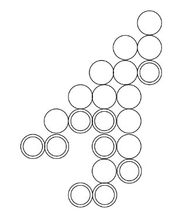

I study applications of operad theory to combinatorics and number theory. We have found links between combinatory of polytopes and zeta values, and new binomial identities.
Papers:
An algebra over the operad of posets and structural binomial identitiespublication link, arxiv link, with Jose Antonio Arciniega-Nevarez and Marko Berghoff. Boletín de la Sociedad Matemática Mexicana.
In this paper we study series parallel posets as an algebra over an operad of posets. In our theory, the associativity of concatenation introduces new identities of binomial coefficients.
Polychrony as Chinampas. publication link, arxiv link, with Jose Antonio Arciniega-Nevarez, Anh Nguyen, Yitong Zou, Luke Van Popering, Nathan Crock, Gordon Erlebacher and Jose L. Mendoza-Cortes. Algorithms.
In this paper we study signal-flow graphs with a nonlinear condition on the vertices.

Put double rings on some integer lattice points in the first quadrant of the cartesian plane. From bottom to top, left to right, if coordinate (x,y) and (x,y+1) are have any circles, then put a simple circle on (x+1,y+1). What you obtain is a chinampa. To count certain polycrhony groups we introduce the theory of chinampas and study their enumeration problem.
Preprints:
A poset version of Ramanujan results on Eulerian numbers and zeta values link
Consider the decomposition of a cube into 6 pyramids. When we put them togeter, we double count 6 triangles, and when we remove those triangles, we had to return a line. This leads to an inclussion exclusion formula cube=6pyramids-6triangles+1line. From that formula we describe an identity among zeta values. We then show that this proces: decomposition of polytopes-> identities with zeta values is true for order polytopes of series parallel posets. This is generalization of an identity by Ramanujan.
Convergence of Taylor Series of real normed division algebras. link.
In this paper we demonstrate how to extend the Cauchy-Hadamard theorem to quaternionic analysis; the methods allowed us to prove a couple of Abel's theorems about convergence of (hyperholomorphic) series and to find a bigger region of convergence than the standard sphere.
I'm coauthor of "Growth of (Re,
Pb)-Ca-Ba-Cu-Ag-O Precursor films by spray Pyrolysis Technique", published at the
Symposium Solar Cells \& Solar Energy Materials, XIV International
Materials Research Congress 2005, Abstracts Book p. 32.